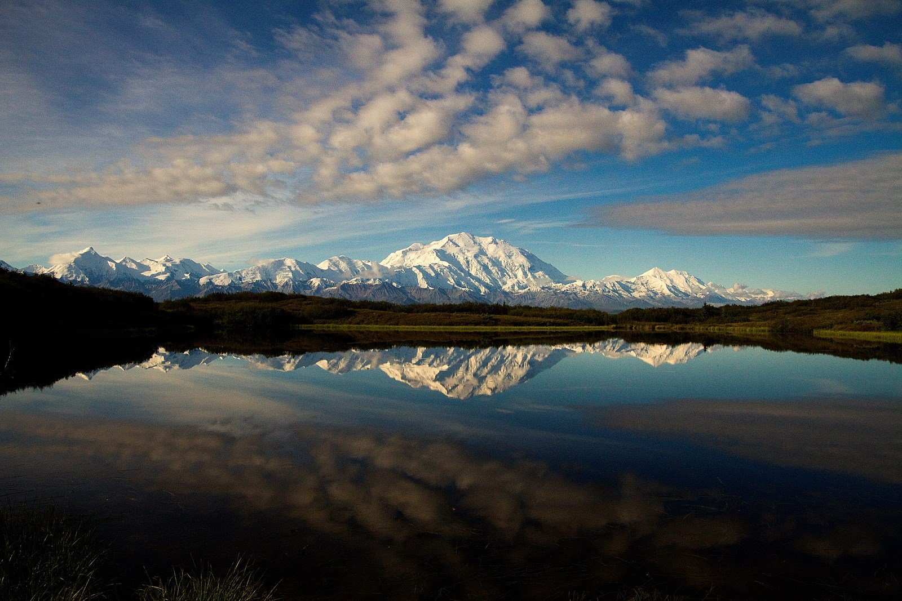
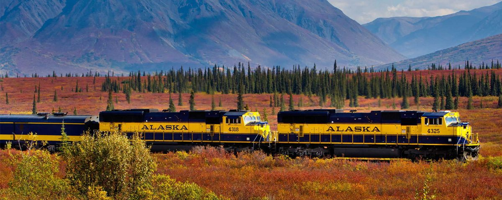
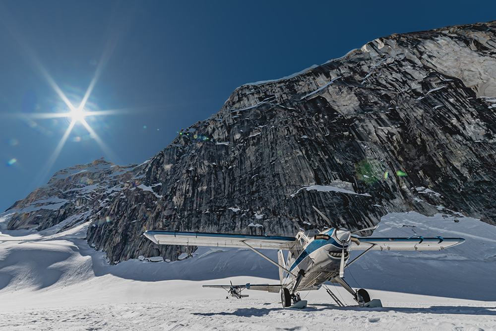
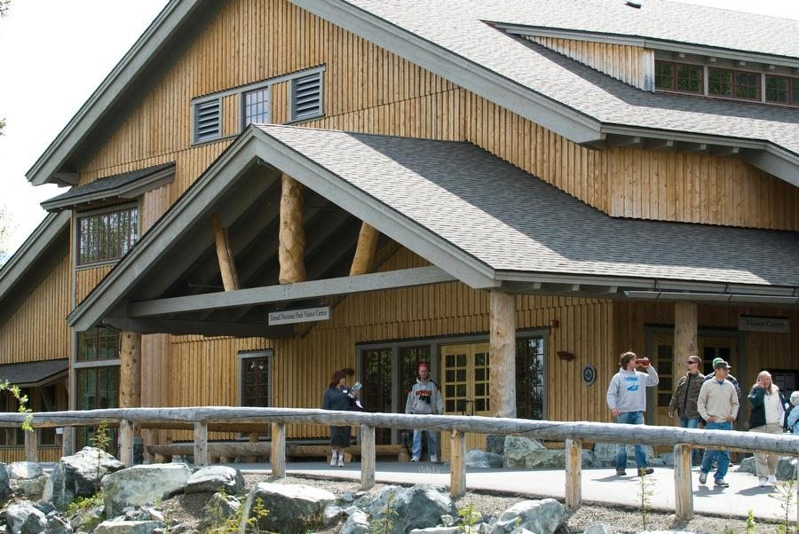
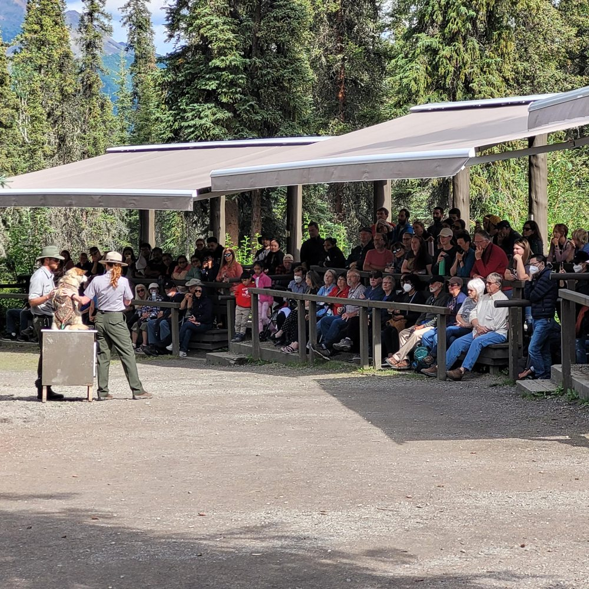
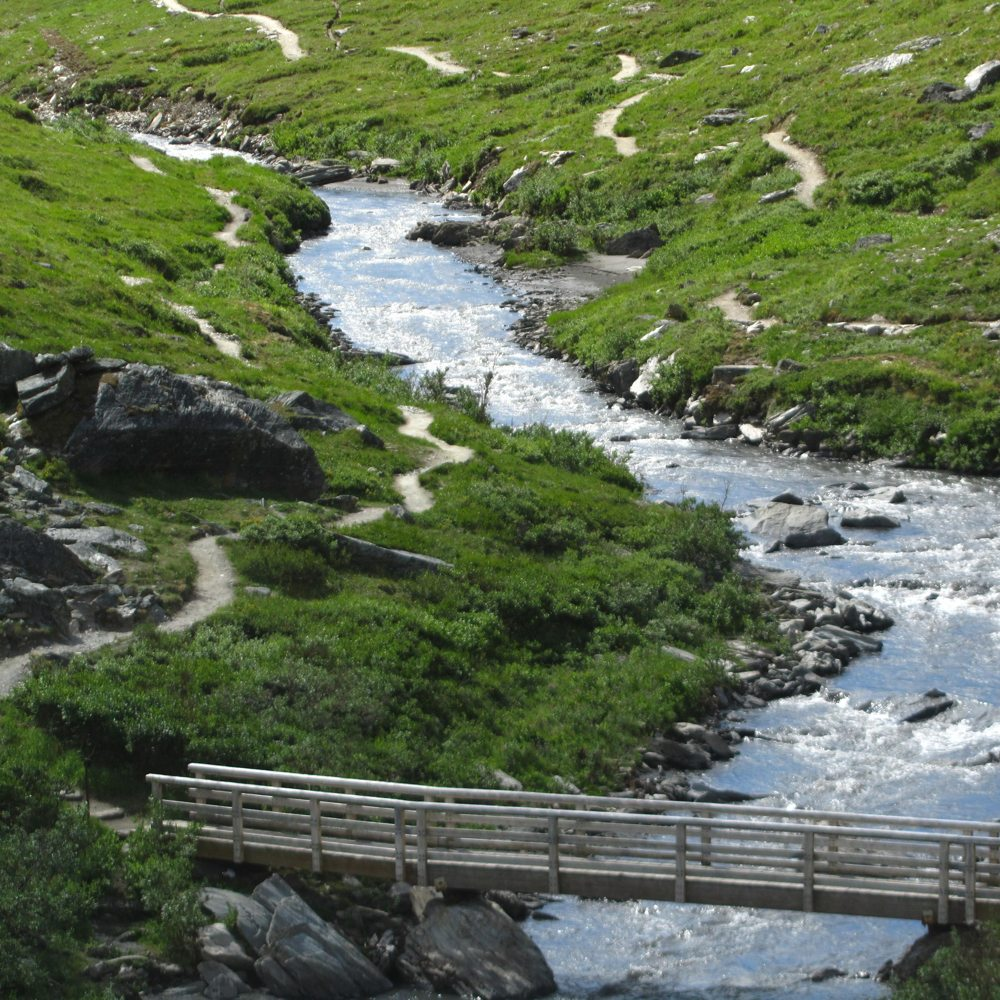
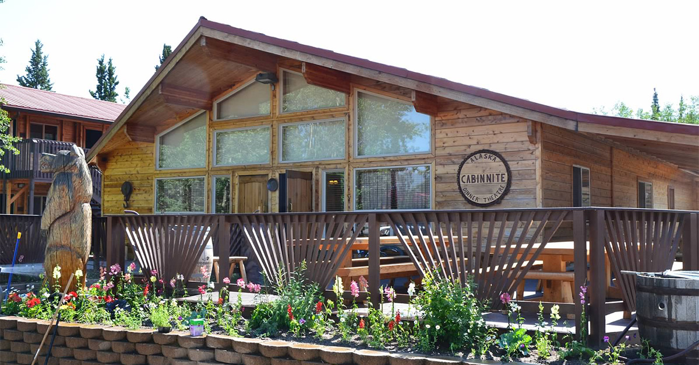

NPS / Nathan KostegianDAY 3 · DAY 4 · DAY 5
丹奈利
Denali
用一段巴士旅程讀懂內陸荒野，再用短步道和遊客中心，把遠方的山變成眼前的故事。
PLAN / OBSERVE / EXPERIENCE
把這座公園玩得更明白
行程安排、現場觀察與旅行經驗，放在一起閱讀。
三天怎麼分：抵達日飛行、完整公園日、離開前看展
Day 3 搭火車北上、入住後接約傍晚六點的 Fly Denali；Day 4 以 Tundra Wilderness Tour 為主，再依回程時刻接雪橇犬、河谷及晚餐劇場；Day 5 留遊客中心與附近散步，再搭中午火車南下。
這樣能同時看空中山系、巴士沿線的荒野和腳邊的景觀。行程順序要以已訂活動為中心：火車、飛行和晚餐劇場先確認接送；小步道可視時間縮短。
荒野看什麼：山峰之外還有森林、苔原和河流
巴士沿公路移動時，可以觀察森林逐漸轉為低矮植被的地方、河流如何在谷地分散，以及動物選擇在哪裡活動。山峰可能藏在雲裡，並不表示整天沒有值得看的景色。
先用肉眼掃視地形，再用望遠鏡看遠方的小點。巴士停靠與下車按司機指示，不把野生動物當成固定節目，也不為了一張近照離開規定範圍。
親自體驗，非常推薦：Fly Denali
地面的公園巴士與小飛機提供完全不同的尺度。飛行可看山壁與冰流如何連在一起；Ruth Glacier 的冰川著陸產品，則在天候允許時把空中景觀變成可近身感受的冰雪環境。
這項體驗已實際參加並非常推薦。需提前預訂，確認接火車、住宿接送與報到時間。飛行或著陸仍由當天條件決定，不能把預約等同一定會降落。
親自參加很有趣：Cabin Nite，加上務實的取捨
Cabin Nite 把晚餐和歌唱、故事、觀眾互動放在木屋劇場裡，是公園日之後不同類型的體驗。想參加晚間七點多的場次，先確認從住宿出發的接送時間，不能只看開演時間。
Tundra 團要提前報名，48 小時前公布的是實際時刻。若巴士晚回來，優先縮短或取消 Savage River；不要為了保留每一站而錯過已預訂的劇場。犬舍活動及河谷散步也可按體力取捨。
全部為阿拉斯加當地時間。「班表／業者」為官方所列時間；「建議／估時／示範」是本行程預留的活動與移動時間。火車頁面已更新到 2027 夏季；公園接駁仍有 2026 版本，請核對出遊年度。不同船班請依票券替換；本表採 12:00 Seward 船班。
DAY 03
Denali｜景觀火車＋冰川飛行
上午搭景觀鐵路北上，下午入住，傍晚搭 Fly Denali 小飛機看 Ruth Glacier。親自體驗，非常推薦！住宿應選能安排車站接駁的地點，並提前確認飛行業者的接送與報到時間。
今晚住宿區域：Denali 園區入口周邊
Day 2–5 為由阿拉斯加鐵路安排的鐵路套裝行程段。預訂時請核對套裝所含列車、活動、住宿與接駁，以確認文件列出的內容和集合資訊為準。Denali 巴士仍需提前訂位，實際出發時刻於 48 小時前確認。
- 06:30–07:00建議
早餐、退房
提前安排住宿到 Anchorage Depot 的交通。回程仍住 Anchorage 的旅客，可詢問是否能寄放部分行李；不要假定飯店一定提供。
- 07:20建議
Anchorage Depot 報到
比 08:20 發車提前一小時。預订 Anchorage → Denali，不是直接訂到 Fairbanks。
- 08:20–15:40班表
Denali Star：Anchorage → Denali
午餐在車上依票種安排。火車經 Talkeetna 一帶往內陸，沿途山谷與河川是今天的主要景觀。

Denali Star 列車與沿線山景，秋色實景 · Alaska Railroad · 照片來源 Denali Star｜景點介紹
從海岸城市進入內陸，鐵路帶你看河川、森林與山谷。若天氣晴朗，可留意遠方山峰；山景是否露出不保證，選座也不能取代好天氣。
看展與散步以當天開放區域為準，保留前往下一站的交通時間。
- 15:40–16:30估時
下車、領行李、住宿接駁
火車與住宿一起訂時，依套裝安排搭飯店接送。車站到飯店的時間依住宿不同；事先確認候車位置、行李處理與是否需預約。
- 16:30–17:00建議
入住、核對隔天巴士接送
Tundra Wilderness Tour 應已提前訂好，出發前 48 小時可查實際時刻；今天再次確認集合時間和地點。只有獲配早班，才能照 Day 4 的下午犬舍＋河谷安排走。
Denali 景觀示意；當日能見度與巴士路線依現場安排 · NPS / Nathan Kostegian Denali｜沿著 Park Road 讀懂荒野
有解說的觀景巴士適合以坐車為主的旅客。留意森林與低矮苔原交界、河谷和動物活動。它與可中途下車健行的 transit bus 是不同產品；實際開放終點需核對 NPS 當季公告。
現場看什麼：先看森林轉為低矮苔原的位置，再找河谷與山坡上的動物。山峰可能被雲遮住，動物也可能很遠，準備望遠鏡比期待近距離更實際。巴士停車與下車依司機指示。
- 17:00–17:30建議
先吃簡餐，準備飛行衣物
準備保暖外套與相機。先吃點東西，飛行結束後再安排晚餐；若業者要求更早接送，應縮短入住整理時間。
- 約 17:30 起估時
接送至 Fly Denali、報到與安全說明
接送時間需事先由業者確認，本表只是預留安排。出發基地為 Healy River Airport；請確認住宿是否在接送範圍、幾點候車及行李限制。
- 約 18:00–20:15預約活動
Fly Denali｜Ruth Glacier 冰川飛行
親自體驗，非常推薦。傍晚約六點搭小飛機，從空中欣賞山峰、冰流與冰川谷地。官網目前 2027 傍晚班列為 18:15，冰川著陸產品約 100 分鐘飛行＋20 分鐘冰上停留；實際時間、航線及是否著陸以所訂產品與當天天氣為準。

Fly Denali 小飛機停在冰雪地面的景觀，業者示意照片 · Fly Denali · 照片來源 Ruth Glacier｜從空中看冰川與山壁
冰川沿山谷緩慢流動，從空中能看清冰流、裂隙與兩側高聳山壁的關係。Fly Denali 的冰川著陸產品前往 Ruth Glacier 一帶；若當天可著陸，依飛行員指示在允許範圍活動。這裡是 Denali 的 Ruth Glacier，與 Wrangell–St. Elias 的 Root Glacier 不同。
看展與散步以當天開放區域為準，保留前往下一站的交通時間。
- 約 20:15–21:00估時
返抵基地、接送回住宿
本表依傍晚班及約兩小時活動預留回程；不是保證回飯店時間。提早確認晚餐最晚供餐時間，也可預備餐食。
- 約 21:00 起建議
晚餐與休息
隔天巴士可能很早出發，今晚先整理好水、點心與保暖衣物。
Fly Denali 需提前預訂，提供火車約 15:40 抵達及住宿資訊，確認晚間班可銜接。不要假設飛行含在所有阿拉斯加鐵路套裝中；是否加購、接送及遇火車誤點的處理方式都先確認。
飛行和冰川著陸受天候影響，安全由飛行員判斷。若取消，依業者政策處理改期或退款；隔天已有 Tundra Wilderness Tour，不能直接把飛行塞入未確認的空檔。
DAY 04
Denali｜巴士、雪橇犬與 Savage River
這是一個完整公園日。以下以約 06:00 出發的 Tundra Wilderness Tour 示範；營運季每天有團，必須提前報名訂位；出發前 48 小時才公布／確認實際集合時刻，不是前兩天才開始報名。訂位時先保留整天；收到時間後，再調整犬舍與河谷活動。
今晚住宿區域：Denali 園區入口周邊
Day 2–5 為由阿拉斯加鐵路安排的鐵路套裝行程段。預訂時請核對套裝所含列車、活動、住宿與接駁，以確認文件列出的內容和集合資訊為準。Denali 巴士仍需提前訂位，實際出發時刻於 48 小時前確認。
- 05:15–05:45建議
早餐、到指定集合點
按票券指示提早候車，攜帶水與點心。上車位置可能是飯店或指定站點，不能自行改到其他站等車。
- 約 06:00–11:30示範
Tundra Wilderness Tour
NPS 列的行程長度約 5–5.5 小時；主表預留 5.5 小時，飯店接送可能另加時間。這不是可隨意中途下車再搭下一班的 transit bus。
Denali 景觀示意；當日能見度與巴士路線依現場安排 · NPS / Nathan Kostegian Denali｜沿著 Park Road 讀懂荒野
有解說的觀景巴士適合以坐車為主的旅客。留意森林與低矮苔原交界、河谷和動物活動。它與可中途下車健行的 transit bus 是不同產品；實際開放終點需核對 NPS 當季公告。
現場看什麼：先看森林轉為低矮苔原的位置，再找河谷與山坡上的動物。山峰可能被雲遮住，動物也可能很遠，準備望遠鏡比期待近距離更實際。巴士停車與下車依司機指示。
- 11:30–12:15估時
返回入口區，移動到遊客中心
預留接駁／步行時間；若實際回程晚於 12:30，請啟用下方替代方案。
- 12:15–13:00建議
午餐、廁所與簡短看展
先吃飯，遊客中心完整參觀及蓋章安排在 Day 5，避免為了看展錯過犬舍接駁。

Denali Visitor Center 遊客中心 · NPS · 照片來源 遊客中心｜看展、蓋章與 Junior Ranger
先詢問當天服務與手冊要求，再分配展覽和短步道。蓋章與徽章不是同一項活動；審核需要 ranger 與足夠時間。
看展與散步以當天開放區域為準，保留前往下一站的交通時間。
- 13:10 候車；13:20 出發季節班表
DVC → 雪橇犬舍
到 Denali Visitor Center 的 Sled Dog Demonstration Shuttle 站等車；公布夏季表列約 13:40 抵達。

Denali 護林員向遊客介紹雪橇犬 · NPS · 照片來源 雪橇犬｜不是單純的動物表演
解說會把犬隻與公園巡護工作連在一起。跟著 ranger 認識犬舍與工作方式；任何主題徽章或紀念品都依現場活動，不列為行程保證。
參觀方式：跟著 ranger 理解雪橇犬如何協助冬季巡護。拍照時先看工作人員指示，不自行餵食或靠近未開放接觸的犬隻。
- 14:00–14:30季節活動
Sled Dog Demonstration
認識雪橇犬與公園巡護工作。示範約半小時；是否能接觸犬隻，依 ranger 現場指示。
雪橇犬｜不是單純的動物表演
解說會把犬隻與公園巡護工作連在一起。跟著 ranger 認識犬舍與工作方式；任何主題徽章或紀念品都依現場活動，不列為行程保證。
參觀方式：跟著 ranger 理解雪橇犬如何協助冬季巡護。拍照時先看工作人員指示，不自行餵食或靠近未開放接觸的犬隻。
- 14:40–15:00季節班表
犬舍接駁回 DVC
官方夏季範例表列 14:40 離犬舍、約 15:00 回遊客中心。先核對 Savage River 的下一班與回程班次。
- 約 15:30–16:30估時
搭 Savage River Shuttle 進河谷
保守預留一小時單程與沿途停靠；實際發車分鐘以當季站牌為準，不把它寫成固定 15:30 班次。

Savage River 河流、步道與橋梁 · NPS · 照片來源 Savage River｜怎麼簡單走
把河流與開闊谷地當主角，短走後原路折返即可。Savage Alpine 是不同的較費力路線，不要看到名稱相似就臨時改走。留意熊與其他動物，並預先看回程站牌。
簡單走法：從下車點沿河選短段走 15–20 分鐘，再原路折返；預留候車時間。不要把較費力的 Savage Alpine 當成同一條河岸散步路線。
- 約 16:30–17:15建議
Savage River 短走
安排 30–45 分鐘近河谷散步，按體力折返；本表不安排完整長步道或 Savage Alpine。
Savage River｜怎麼簡單走
把河流與開闊谷地當主角，短走後原路折返即可。Savage Alpine 是不同的較費力路線，不要看到名稱相似就臨時改走。留意熊與其他動物，並預先看回程站牌。
簡單走法：從下車點沿河選短段走 15–20 分鐘，再原路折返；預留候車時間。不要把較費力的 Savage Alpine 當成同一條河岸散步路線。
- 約 17:15–18:30估時
候車與返回公園入口
回程留出等車時間，事先確認飯店最後接駁；不能只看公園巴士仍營運就假設回得了飯店。
- 約 18:30–19:15估時
前往 Denali Park Village、劇場報到
提前確認從住宿接駁或自行前往的方式。若票券的接送時間早於河谷回程，應取消 Savage River，犬舍結束後直接回住宿休息與等車，不要錯過劇場接送。
- 晚間七點多；參考 19:45預約活動
Alaska Cabin Nite Dinner Theatre｜晚餐＋表演
親自參加，覺得很有趣！在 Denali Park Village 的木屋劇場用餐、欣賞歌唱與互動演出。2026 夏季主要營運時段的晚場為 19:45，其他年度及季初末可能不同；請提前預訂並依票券報到。晚餐包含在此活動中，不另排同時段餐廳。

Alaska Cabin Nite Dinner Theatre 晚餐劇場，業者示意照片 · Denali Park Village · 照片來源 Cabin Nite｜阿拉斯加木屋晚餐劇場
表演在 Denali Park Village 的 Miners Plaza 木屋劇場進行，以輕鬆歌唱、故事與觀眾互動呈現昔日阿拉斯加氛圍。餐點採家庭分享式供餐；飲食需求提前告知。活動需預訂，接送只涵蓋業者列出的部分住宿，不代表所有飯店都有接駁。
看展與散步以當天開放區域為準，保留前往下一站的交通時間。
- 散場後依場次
依約定接駁回住宿
訂票時一併確認散場及返程接送時間；這裡不把未確認的散場時刻寫成固定班表。隔天早上遊客中心、12:30 南下火車，今晚整理好行李再休息。
規劃旅程時先訂 Tundra Wilderness Tour 並確認日期、接送地點與訂位條件；把這一天保留給公園。出發前 48 小時查集合時刻，再決定犬舍與 Savage River 的先後或刪減，不要先訂不可調整的下午活動。
若約 08:00 才出發，可能到 13:30 才結束，不能再趕 13:20 接駁。可改當季有開的 16:00 犬舍示範，並取消下午 Savage River；若巴士更晚，就把犬舍排到其他完整一天。
犬舍接駁的精確分鐘取自 NPS 公布的 2026 夏季表；2027 或其他季節須重新核對。若班表不同，保持「示範前約 40 分鐘搭車」的銜接原則。
DAY 05
Denali｜遊客中心與南下火車
早上留給遊客中心與蓋章，不再搭車深入園區。中午南下回 Anchorage，為隔天小飛機準備。
今晚住宿區域：Anchorage
Day 2–5 為由阿拉斯加鐵路安排的鐵路套裝行程段。預訂時請核對套裝所含列車、活動、住宿與接駁，以確認文件列出的內容和集合資訊為準。Denali 巴士仍需提前訂位，實際出發時刻於 48 小時前確認。
- 08:00–09:00建議
早餐、退房與寄存行李
和飯店確認行李要自己帶到車站，或有明確約定的運送服務。先把行李處理好，再去遊客中心。
- 09:00–10:30建議
Denali Visitor Center 看展、蓋章
依當季開門時間調整。Junior Ranger 手冊與審核先詢問 ranger；不要等火車快開才開始辦理。
Denali Visitor Center 遊客中心 · NPS · 照片來源 遊客中心｜看展、蓋章與 Junior Ranger
先詢問當天服務與手冊要求，再分配展覽和短步道。蓋章與徽章不是同一項活動；審核需要 ranger 與足夠時間。
看展與散步以當天開放區域為準，保留前往下一站的交通時間。
- 10:30–11:15建議
入口周邊短走、取行李
只選能準時回到車站的附近步道。準備車上午餐或確認餐車服務。
- 11:30建議
Denali Depot 報到
主表保留一小時報到餘裕。車票目的地選 Anchorage；若需取回飯店寄送行李，今天事先確認交接流程。
- 12:30–20:00班表
Denali Star：Denali → Anchorage
車上觀景、午餐與晚餐依票種安排。火車抵達時間不等於抵達市區飯店時間。
Denali Star 列車與沿線山景，秋色實景 · Alaska Railroad · 照片來源 Denali Star｜景點介紹
從海岸城市進入內陸，鐵路帶你看河川、森林與山谷。若天氣晴朗，可留意遠方山峰；山景是否露出不保證，選座也不能取代好天氣。
看展與散步以當天開放區域為準，保留前往下一站的交通時間。
- 約 20:15–21:00估時
回住宿，確認 Katmai 集合資訊
小飛機可能從不同機場或業者基地出發，依確認信安排接送；不要一律導航到 Anchorage 主航廈。
班表與景點資料
NPS｜Denali 旅遊規劃與巴士 ↗NPS｜當前路況 ↗Alaska Railroad｜Denali Star ↗Alaska State Parks｜Matanuska 觀景與 Edge Nature Trail ↗Cabin Nite｜場次、訂位、餐飲與接駁 ↗Fly Denali｜冰川飛行、時長與班次 ↗Fly Denali｜接送與天候問題 ↗Reserve Denali｜出發前 48 小時查詢時刻 ↗Alaska Railroad｜列車班表（目前為 2027 夏季） ↗Alaska Railroad｜報到規定 ↗Kenai Fjords Tours｜鐵路接駁與船班 FAQ ↗Alaska Railroad｜5.5 小時遊船產品 ↗NPS｜Denali 巴士時長與預約 ↗NPS｜Denali 免費接駁班表 ↗Katmai Air｜Brooks Falls 當日往返 ↗照片：NPS / Nathan Kostegian · 來源